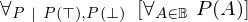

Show the Proof¶
In [1]:
import proveit
# Automation is not needed when only showing a stored proof:
proveit.defaults.automation = False # This will speed things up.
proveit.defaults.inline_pngs = False # Makes files smaller.
%show_proof
Out[1]:
| step type | requirements | statement | ||
|---|---|---|---|---|
| 0 | instantiation | 1, 2, 3 | ⊢  | |
 : , : ,  : : | ||||
| 1 | theorem | ⊢  | ||
| proveit.logic.booleans.fold_forall_over_bool | ||||
| 2 | instantiation | 6, 4, 5 | ⊢ | |
 : , : ,  : :  , ,  : :  | ||||
| 3 | instantiation | 6, 7, 8 | ⊢ | |
: , : , :  | ||||
| 4 | instantiation | 10, 9 | ⊢ | |
| : | ||||
| 5 | axiom | ⊢  | ||
| proveit.logic.booleans.conjunction.and_t_t | ||||
| 6 | theorem | ⊢  | ||
| proveit.logic.equality.sub_right_side_into | ||||
| 7 | instantiation | 10, 11 | ⊢ | |
| : | ||||
| 8 | axiom | ⊢  | ||
| proveit.logic.booleans.conjunction.and_t_f | ||||
| 9 | theorem | ⊢  | ||
| proveit.logic.booleans.true_is_bool | ||||
| 10 | theorem | ⊢ | ||
| proveit.logic.booleans.conjunction.unary_and_reduction_lemma | ||||
| 11 | theorem | ⊢ | ||
| proveit.logic.booleans.false_is_bool | ||||